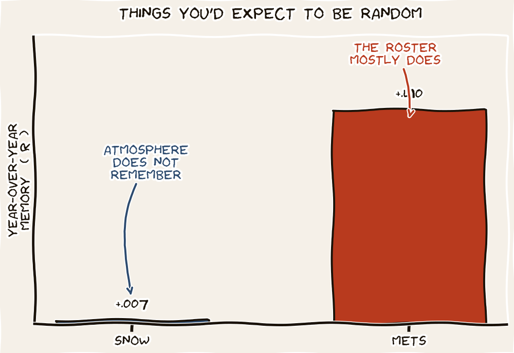

The Mets Are Seventy Times More Predictable Than the Snow.
A reader, having watched yesterday's analog-year piece, asked a question we did not expect: is the weather more predictable than the Mets? Most fans would answer yes without thinking. We checked. The numbers are not close. Most fans would be very wrong.

The question came in by way of friend of the newsletter Tim, who arrived at it confessionally. Tim has spent twenty years of his life trying to match this ski season's snowfall against last year's, the year before last's, the great years of his childhood. He used the same kind of nearest-neighbor analogy that Wall Street uses against 1994 and that we used yesterday against 2021. Tim's read of his own history: folly. Snow seasons, he said, do not seem to repeat themselves. Each year arrives fresh, owing the previous year nothing.
That is a falsifiable claim. We can ask, of any time series, how much last year's value predicts next year's. The standard answer is the lag-one autocorrelation — the Pearson correlation between the value in year t and the value in year t plus one. If the autocorrelation is high, the system has memory: this year's reading tells you something about next year's. If it is low, each year is a coin flip drawn from the same urn.
Two histograms, one chart
The chart below shows the two systems side by side. On the left: total seasonal snowfall (November through April) at Steamboat Springs, Colorado, every season from 1985 onward, plotted as this year's value against next year's. The Steamboat record at NOAA station USC00057936 covers more than a hundred years; we used the modern subset that overlaps with the MLB data on the right.
On the right: every team-to-team year-over-year pair in Major League Baseball from 1985 to 2025. Each dot is one team in one year, plotted against the same team in the next year. Win pct on both axes. We drew a random sample of three hundred dots so the cloud is readable, but the correlation reported is over all eleven hundred fifty-eight pairs.
What the numbers say
The snow scatter on the left is a cloud. The correlation is 0.007. That is statistically zero. The line through the dots is flat. If you tell me that Steamboat got two thousand millimeters of snow last year, I have learned almost nothing about how much snow it will get next year. Tim was right about his own twenty years of mental analog-matching: it was folly. Each ski season is, statistically, a fresh draw.
The baseball scatter on the right is something else entirely. The dots tilt up from left to right. A team that posted a .400 winning percentage last year is much more likely to post a .400 this year than a .600. A team that won ninety-five games last year is more likely to be near ninety this year than near seventy. The correlation is 0.490. By the standard rule of thumb, last year's record explains roughly twenty-four percent of the variance in next year's. That is enormous compared to the snow.
If you want to predict next season, bet on baseball. Tim's twenty years of ski matching had nothing to lean on. Twenty years of baseball matching would have done quite a bit better.
PredictabilityAnd the New York Mets specifically? Their own year-over-year autocorrelation is 0.407 — slightly less than the league average, but only by a hair. The Mets are not the most volatile team in baseball. They are roughly as predictable as the average major-league franchise, which is to say, seventy times more predictable than the snow at Steamboat.
Why the gap?
The economic answer is straightforward. A baseball roster is mostly the same year over year. Players are signed to multi-year contracts. Front offices, when they are good, stay good for a while; when they are bad, they tend to stay bad. Talent, infrastructure, scouting, and player development do not get replaced overnight. So last year's wins encode last year's roster, and a healthy share of last year's roster is going to be the team you watch this year.
The atmospheric answer for snowfall is the opposite. Total Colorado-mountain winter precipitation depends on jet-stream meanders, on El Niño-Southern-Oscillation states, on stochastic pressure differentials over the Pacific that have no preference for last year's value. There is no contract structure for the atmosphere. Each ski season inherits very little from the one before.
This is exactly what makes analog-matching a useful exercise for baseball and a misleading one for skiing. Pattern-matching works only where the patterns persist. Yesterday's piece found 2026 in the neighborhood of 2021 because the league is the kind of system that builds neighborhoods. The same exercise on Tim's ski history would have built nothing — or worse, built a sense of seasonal narrative that the data does not support.
A defensive reader's takeaway
The trap
When somebody — pundit, gambler, ski-resort marketing department, market strategist — tells you that a year resembles some prior year and that you should accordingly expect similar things to happen, your first question should not be "is the resemblance close?" Your first question should be: how autocorrelated is the underlying system? If the lag-one r is close to zero, the resemblance is meaningless even when it is real, because the next year is going to draw from the same hat no matter what was drawn last time.
This newsletter does analog-matching for MLB because MLB has the persistence to make it informative. We will not be doing it for ski seasons. Tim got there first.
Notes & sources
Snowfall: NOAA GHCN-Daily station USC00057936 (Steamboat Springs, CO). "Season" defined as November 1 through April 30; only seasons with at least 150 days reported are included. Resulting series: 31 ski seasons since 1985, producing 27 lag-1 pairs after gaps.
Baseball: MLB Stats API standings 1985–2025 inclusive, all teams in both leagues, regular season records. Strike-shortened 1994 and pandemic-shortened 2020 included on the basis that the win-pct fraction is comparable across game counts. 1,158 team-year-pairs total. Mets-only series: 40 pairs.
Lag-1 autocorrelation is the Pearson correlation between the value in year t and the value in year t+1, taken across all eligible adjacent-year pairs in the series. For pooled MLB, pairs are stratified by team (so the Yankees in 1995 contribute a pair with the Yankees in 1996, not the Tigers in 1996). The chart on the right shows a uniform random sample of 300 of the 1,158 team-pairs for legibility; the reported r is over all 1,158 pairs.